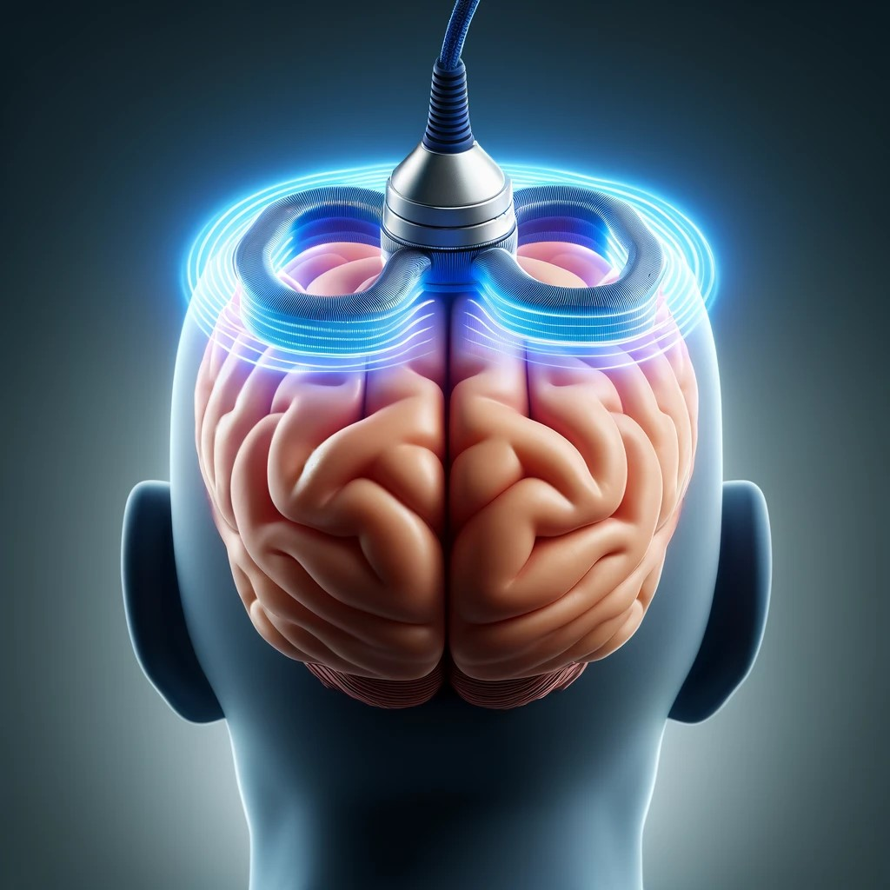

人類使用非侵入性腦部刺激術的歷史最早可追朔到3000年前古埃及人利用電鰻電擊頭部來治療頭痛。之後相似的技術在西元1938年由Ugo Cerletti與Lucio Bini發展成電痙攣療法來誘發癲癇來治療精神精神分裂症。由於18世紀電磁學的進步，在1985年Anthony Barker於英格蘭發表了人類史上第一個用於人腦的經顱磁刺激(TMS)實驗，經由電磁感應原理在大腦皮質產生極短時間的微弱電流，以此方式刺激大腦運動皮質區可以誘發肢體肌肉的活動。利用不同擊發組合的經顱磁刺激(TMS)，由此揭開了人類探索運動神經系統的新頁。 在經顱磁刺激(TMS)的發展中，經由重覆且固定模式的刺激後(即’重複經顱磁刺激’ repetitive TMS, rTMS)，神經生理學家們發現這會改變位於神經元突觸的大腦皮質可塑性(cortical plasticity)，進而有可能發生人為控制特定神經迴路的活動。 在這之後，經顱磁刺激(TMS)的研究發展迅速，並在2008年起由美國食品藥物監督管理局批准數項臨床使用經顱磁刺激(TMS)的適應症，包含治療藥物反應不佳的憂鬱症(2008)、大腦功能定位(2009)、有前兆症狀的偏頭痛治療(2013)、強迫症治療(2017)、戒菸治療(2020)及憂鬱症合併焦慮症狀(2021)。目前台灣衛福部也於2018年核可重覆經顱磁刺激於臨床治療憂鬱症。
本院神經內科部已故 黃英儒教授在2004年的英國倫敦大學學院 (UCL) 博士畢業論文報告了他所發明的叢集性陣發刺激theta burst stimulation (TBS) ，為新的重複經顱磁刺激(rTMS)之刺激模式。與傳統的重複經顱磁刺激(rTMS)相比，TBS具有更高的大腦皮質可塑性(cortical plasticity)調控效率的優點。 黃英儒教授在回台後的十幾年間持續在林口長庚醫院進行研究與研發，最終，他發明的間歇性叢集性陣發刺激 intermittent theta burst stimulation (iTBS) 模式更於2018年獲得美國食品藥物監督管理局批准可使用於臨床憂鬱症治療，也是目前經常使用的刺激模式之一。黃英儒教授也在2022年獲得美國史丹佛大學公布全球前2%「2020年度科學影響力排行榜」之頂尖科學家。 根據黃教授的研究，叢集性陣發刺激(TBS)之所以能改變大腦皮質可塑性(cortical plasticity)，是藉由電磁感應產生在大腦皮質表面的微弱電流，改變腦皮質神經細胞內的鈣離子濃度，因而造成突觸後神經元的膜電位改變，接續傳遞並擴散神經電生理訊號，而最終改變整個神經網路系統的活動。而這樣的機轉可能會因藥物或是生理活動狀況造成第二個層次的人為介入，改變原本預期的大腦皮質可塑性變化(plasticity of plasticity)。 黃英儒教授在世時也曾大力栽培神經科後進與指導其他友科學習與實作經顱磁刺激(TMS)、重複經顱磁刺激(rTMS)與叢集性陣發刺激(TBS)。作為承接黃英儒教授畢生心血的後人，後續的研究由年輕一輩持續努力中，並且在臨床輔助與治療應用上，也依據嚴謹的學術定義與模型來為合適的病患制定方案。